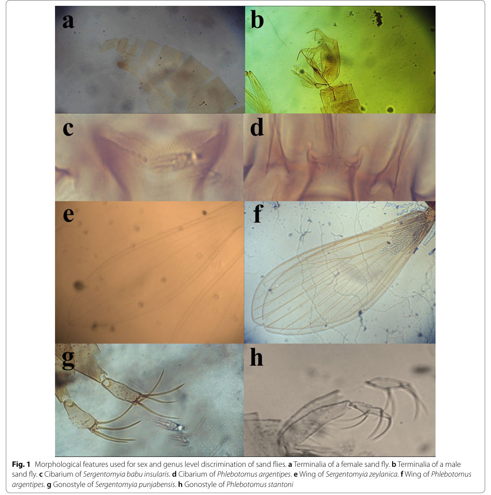

Keys › Sri Lanka: females
Sri Lanka: females
Modern photo-illustrated key to the 22 species recorded from Sri Lanka, females.
| Source | Wijerathna, T. & Gunathilaka, N. (2020) Morphological identification keys for adults of sand flies (Diptera: Psychodidae) in Sri Lanka. Parasites & Vectors 13: 450. https://doi.org/10.1186/s13071-020-04305-w |
|---|---|
| Region | Sri Lanka |
| Sexes | female |
| Size | 21 couplets, 22 terminal taxa, 18 leads with notes (⚠) |
G1 Wings broader, asymmetrical along the length (Fig. 1f). Cibarium unarmed or with scattered spicules, without a pigment patch (Fig. 1d) ⚠


Genus Phlebotomus→ P1
Update from later literature
The Sri Lanka keys do not include Idiophlebotomus, first recorded from Sri Lanka by Kumari et al. 2026 (Gampaha and Galle districts; males only). The genus has a toothed cibarium and unarmed pharynx with broad wings, so it fits neither G1a nor G1b fully; use the Lewis 1982 Idiophlebotomus key.
G1′– Wings narrow, lanceolate, symmetrical along the length (Fig. 1e). Cibarium with one or more rows of teeth, pigment patch usually present (Fig. 1c) ⚠
Genus Sergentomyia→ S1
Update from later literature
The Sri Lanka keys do not include Idiophlebotomus, first recorded from Sri Lanka by Kumari et al. 2026 (Gampaha and Galle districts; males only). The genus has a toothed cibarium and unarmed pharynx with broad wings, so it fits neither G1a nor G1b fully; use the Lewis 1982 Idiophlebotomus key. S. nayanasis (Sri Lanka, Anuradhapura; Kumari et al. 2026) is not in this key. ♀: cibarium with 8-10 robust, darkly pigmented teeth in a single transverse row; pharynx with fine longitudinal ridges and striations, no heavily sclerotized spines; spermatheca smooth (also said to have cross striations) with a relatively wide individual duct and minute apical projections. It may run to S9b (smooth capsule), S12 (smooth tubular) or S14 (striated; fits neither 14a nor 14b).
P1 Head of spermatheca with a distinct neck; spermatheca spindle-shaped (Fig. 2a) ⚠
Update from later literature
P. stantoni s.l.: see P. shadenae (Renaux Torres et al. 2023), separated by spermathecal duct length.
P1′– Head of spermatheca without a distinct neck (Figs 2b, 4a); spermatheca not spindle-shaped
P2 Spermatheca with 7-8 segments; apical segment not enlarged (Fig. 4a) ⚠
Update from later literature
P. ajithii (India; Shah et al. 2024) has an apical segment not enlarged but 13-15 segments and very long coiled individual ducts; it fits neither P2a nor P2b.
P2′– Spermatheca with 15-17 segments; apical segment enlarged (Fig. 2b)
P3 Thorax dorsum brown, sides dark ⚠
Note
Status debated; often treated as a variety of P. argentipes (see paper's discussion).
P3′– Thorax dorsum black, sides pale
Phlebotomus argentipes sensu lato→ P4
P4 Wing overlap (R1 overlap with R2 / complete length of R2) < 0.2; wing index (R2/R2+3) < 0.2; ascoid : antennal flagellomere ratio > 0.5 ⚠
Update from later literature
Galati et al. 2025 (p. 38) do not accept P. annandalei and P. glaucus as valid species; their name P. argentipes includes these populations.
P4′– Wing overlap ≥ 0.2; wing index > 0.2; ascoid : antennal flagellomere ratio < 0.5
P5 Wing overlap = 0.2; wing index = 2.0; ascoid : antennal flagellomere ratio > 0.4 ⚠
Note
sensu stricto
P5′– Wing overlap > 0.2; wing index < 2.0; ascoid : antennal flagellomere ratio < 0.4 ⚠
Update from later literature
Galati et al. 2025 (p. 38) do not accept P. annandalei and P. glaucus as valid species; their name P. argentipes includes these populations.
S1 Spermatheca with capsule (Fig. 4b, c), not tubular
S1′– Spermatheca without capsule, tubular (Fig. 4d)
S2 Capsule of spermatheca with numerous spicules or striations (Fig. 4b, c)
Subgenus Grassomyia→ S3
S2′– Capsule of spermatheca smooth
Subgenus Parrotomyia→ S4
S3 Tip of spermatheca with minute projections (Fig. 4b)
S3′– Tip of spermatheca with small projections (Fig. 4c)
S4 Pharynx with distinct pointed teeth (Fig. 3a) 
S4′– Pharynx with fine spicules or none (Fig. 5a) 
S5 Cibarium with a deep notch in hind end of ventral plate (Fig. 3b) ⚠
Update from later literature
Galati et al. 2025 (p. 29) list S. babu insularis as the species S. (Parrotomyia) insularis (Theodor, 1938) (India, Sri Lanka).
S5′– Cibarium without a notch in hind end of ventral plate (Fig. 5b)
S6 Pharynx broad with numerous finely pointed teeth; cibarium with 40-70 teeth; tip of pigment patch bifid, ragged or fenestrated (Fig. 5b) ⚠
Update from later literature
S. barraudi Group: the 40-70 tooth range covers several taxa; see update note on lewis1978 couplet 76a (Prasetyo et al. 2026).
S6′– Without this combination ⚠
Update from later literature
S. rudnicki: Laos specimens have about 80 comb-like teeth and two rows of more than 30 anterior teeth each (Vongphayloth et al. 2024). S. brevicaulis / S. rudnicki: Lao S. brevicaulis have 47-64 posterior cibarial teeth and one or two rows of 17-26 anterior teeth, and differ from Lao S. rudnicki by only 1.4% in cyt-b; the two may be one variable species (Vongphayloth et al. 2026).
S7 Cibarium with a deep notch (Fig. 5c)
S7′– Cibarium without a deep notch
S8 Pharynx with well-defined scales (Fig. 5d)
S8′– Pharynx without scales
S9 Cibarium with pigment patch and 17 hind teeth; pharynx with long teeth (Fig. 5e)
S9′– Cibarial pigment patch small or absent (Fig. 5f); pharynx with spiculate ridges ⚠
Update from later literature
S. bailyi: cibarial teeth may be invisible even with phase contrast (Prasetyo et al. 2026). S. bailyi s.l. may represent a species group needing revision (Vu et al. 2021, cited by Vongphayloth et al. 2026). S. bailyi: compare S. nayanasis (Sri Lanka; Kumari et al. 2026): 8-10 robust, darkly pigmented cibarial teeth in one row, distinct pigment patch; see note on G1b.
S10 Spermatheca smooth (Fig. 4e)
Subgenus Sergentomyia→ S11
S10′– Spermatheca with striations (Fig. 4d)
Subgenus Neophlebotomus→ S13
S11 Pharynx broad at posterior end with a deep constriction at base (Fig. 5g)
S11′– Pharynx barrel-shaped at posterior end and lacking a deep constriction at the base (Fig. 5h, i)
S12 Posterior margin of pharyngeal armature convex (Fig. 5h) ⚠
Update from later literature
Thai specimens: compare S. phadangensis (Polseela et al. 2016): narrow pharynx with discrete armature, 6-8 strong dark cibarial teeth on each side.
S12′– Posterior margin of pharyngeal armature straight (Fig. 5i)
S13 Cibarium with about 8 rows of fore teeth (Fig. 3c); labrum 0.13-0.15 times the length of wing ⚠
Update from later literature
S. arboris: compare S. chattiensis (India; Shah et al. 2026): also about eight rows of fore teeth, 15-18 hind teeth, labrum about 0.16 of wing.
S13′– Cibarium with one or more rows of teeth; labrum > 0.11 times the length of wing ⚠
Note
As printed. S. jamesi (14a) has no tooth row, so read 13b as "cibarium without about 8 rows of fore teeth".
S14 Cibarium without row of teeth; labrum 0.11 times the length of wing ⚠
Update from later literature
S. nayanasis (Kumari et al. 2026) has one row of 8-10 robust cibarial teeth and fits neither S14a nor S14b; see note on G1b.
S14′– Cibarium with 3 rows of fore teeth (Fig. 3d) ⚠
Update from later literature
S. nayanasis (Kumari et al. 2026) has one row of 8-10 robust cibarial teeth and fits neither S14a nor S14b; see note on G1b.
S15 Labrum 0.18-0.20 times length of wing; R2/R2+3 < 2.06
S15′– Labrum 0.13-0.15 times length of wing; R2/R2+3 > 2.06 ⚠
Update from later literature
S. zeylanica: compare S. nayanasis (Sri Lanka; Kumari et al. 2026), see note on G1b.